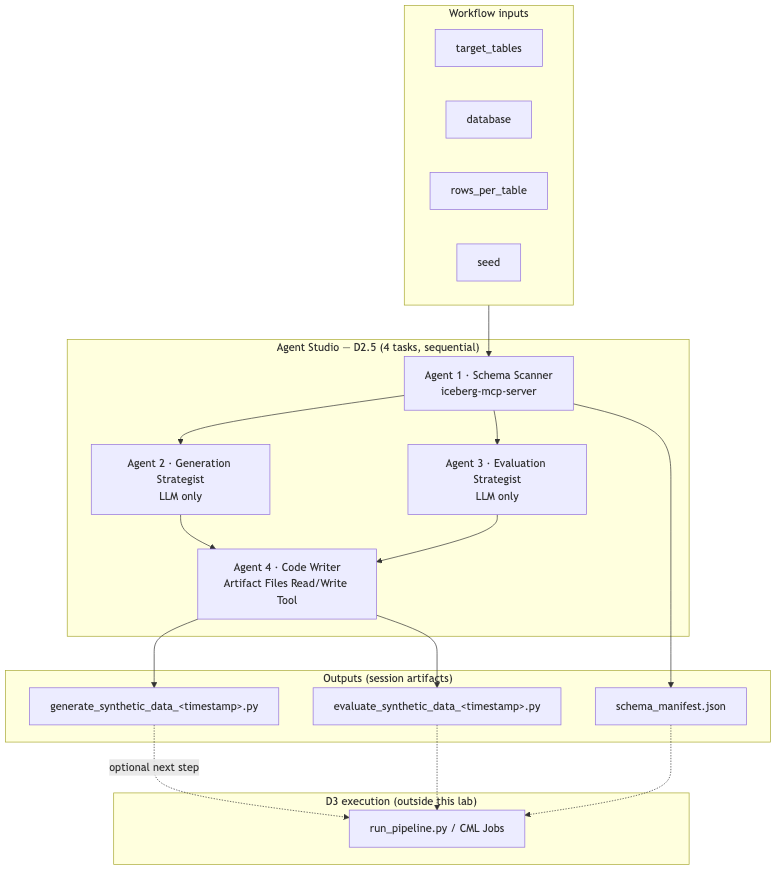
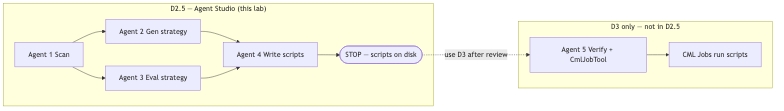
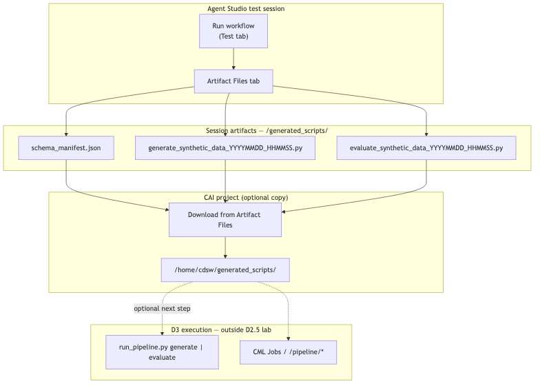

Synthetic Data Generation — Direction 2.5 Hands-On Lab¶
Agent Studio script authoring — same logical pipeline as Direction 3 agentic mode, but runs entirely in the Agent Studio UI and stops after writing Python scripts. You do not run the scripts or dispatch CML Jobs from the workflow itself.
This lab uses Agent Studio only. It does not use the CAI Workbench MCP Server. Schema profiling uses iceberg-mcp-server attached to Agent 1 (same as D1/D2).
| Direction | Where it runs | Generates | Executes scripts? |
|---|---|---|---|
| D2 | Agent Studio + SDS | JSON rows via SDS API | SDS evaluates rows |
| D2.5 (this lab) | Agent Studio only | generate_*.py + evaluate_*.py |
No — stop at script files |
| D3 agentic | CAI App /agent/* |
Same scripts via CrewAI | Yes — CML Jobs (optional) |
| D3 deterministic | run_pipeline.py / /pipeline/* |
CSVs from existing scripts | Yes |
Diagrams¶


Diagram PNGs: ../images/synthetic_data_workflow_d2_5/.
How to read Figure 1
| Region | What it represents |
|---|---|
| Workflow inputs | target_tables, database, rows_per_table, seed |
| Agents 1–4 | Same logical steps as D3 agentic mode (scan → two strategists → code writer) |
| Session artifacts | schema_manifest.json + timestamped .py files via Artifact Files |
| D3 execution (dashed) | Optional — not part of this lab; use D3 after downloading scripts |
Companion docs:
- ../extra_materials/synthetic_data_workflow_d2_5/agents.yaml — Agent Studio import
- ../extra_materials/synthetic_data_workflow_d2_5/tasks.yaml — Task definitions
- synthetic_data_d3_workflow.md — run scripts after this lab
Scope¶
| D2.5 | |
|---|---|
| IS | Agent Studio workshop — profile schema via iceberg-mcp-server, plan strategies, author timestamped Python scripts |
| IS NOT | CAI Workbench MCP, CML Job dispatch, SDS integration, or the CrewAI app (/agent/*) |
| Best for | Learning the D3 agentic pipeline interactively in Agent Studio before production automation |
| Next step | Download artifacts and run scripts manually or via D3 deterministic mode |
Not suitable for production ML training¶
D2.5 does not produce training data. It is an Agent Studio workshop that stops after script authoring — by design.
| Why not | Detail |
|---|---|
| No data output | The workflow ends at timestamped .py files and schema_manifest.json. No CSVs, no eval report, no rows for model training. |
| No execution path | Scripts are not run, CML Jobs are not dispatched, and there is no --seed reproducibility run inside this lab. |
| LLM-authored code requires review | Generated scripts may differ from the D3 reference implementation and need human validation before any production use. |
| Session-bound artefacts | Outputs must be downloaded from Artifact Files and uploaded to a CAI project — not written directly to production paths. |
| Teaching step, not delivery | D2.5 exists to learn the D3 agentic design interactively. Production delivery always requires D3. |
D2.5 → download scripts → D3 deterministic is the intended path to production. Skipping D3 means you have code on disk but no training dataset.
Pipeline steps (matches D3 agentic Agents 1–4)¶
| Step | Agent | Tool | Output |
|---|---|---|---|
| 1. Scan | Schema Scanner | iceberg-mcp-server + Artifact Files |
schema_manifest.json |
| 2. Plan generation | Generation Strategist | LLM only | Strategy JSON |
| 3. Plan evaluation | Evaluation Strategist | LLM only | Evaluation plan JSON |
| 4. Write scripts | Code Writer | Artifact Files Read/Write Tool | generate_synthetic_data_<timestamp>.py, evaluate_synthetic_data_<timestamp>.py |
D3 adds Agent 5 (Script Verifier + CmlJobTool) to verify and run scripts. D2.5 intentionally omits that step (see Figure 2).
Diagram quick reference¶
| Figure | File | Consult when |
|---|---|---|
| Figure 1 | architecture.png |
Overall Agent Studio pipeline |
| Figure 2 | stop_boundary.png |
Explaining why this lab does not run scripts or CML Jobs |
| Figure 3 | final_workflow.png |
Wiring agents, tasks, and context links in Agent Studio |
| Figure 4 | script_artifacts.png |
Collecting outputs from the Artifact Files tab |
| Figure 5 | D3 agentic_architecture.png |
Comparing D2.5 scope to full D3 agentic mode |
Agent Studio script authoring¶
Prerequisites¶
1. Iceberg MCP — iceberg-mcp-server¶
Registered in Agent Studio (same as D1/D2).
| Parameter | Example |
|---|---|
| IMPALA_HOST | hue-impala-gateway.datalake.….cloudera.site |
| IMPALA_PORT | 443 |
| IMPALA_USER | Your workload user |
| IMPALA_PASSWORD | Your password |
| IMPALA_DATABASE | <your_database> |
Optional connectivity check:
2. Artifact Files Read/Write Tool¶
| Agent | Tool | Purpose |
|---|---|---|
| Schema Scanner | Artifact Files Read/Write Tool | Persist schema_manifest.json |
| Code Writer | Artifact Files Read/Write Tool | Required — write both .py scripts |
Agents 1 and 4 must call the tool to write files. Text-only output is not sufficient.
3. YAML import (optional)¶
# From project root, if crewai_yaml_importer is available:
crewai_yaml_importer \
--agents extra_materials/synthetic_data_workflow_d2_5/agents.yaml \
--tasks extra_materials/synthetic_data_workflow_d2_5/tasks.yaml
Or build manually in the UI using the steps below.
B1 — Create the workflow¶
In Agent Studio: Agentic Workflows → Create Workflow → New Workflow
| Field | Value |
|---|---|
| Workflow Name | Synthetic Data Generation D2.5 |
| Process type | Sequential |
B2 — Workflow settings¶
| Toggle | Setting |
|---|---|
| Is Conversational | OFF |
| Manager Agent | OFF |
Input variables¶
Add exactly four variables:
| Variable | Default | Description |
|---|---|---|
target_tables |
source_customers,source_accounts,source_transactions |
Comma-separated table names or all |
database |
<your_database> |
Impala database |
rows_per_table |
1000 |
Default --rows for the generate script |
seed |
42 |
Default --seed for reproducibility |
Template rule: Only
{target_tables},{database},{rows_per_table}, and{seed}may appear in curly braces in agent/task text. Use angle brackets for placeholders in expected output examples.
B3 — Add four agents¶
Create each agent below. Attach tools before moving to the next agent.
Every agent must have Name, Role, Backstory, and Goal filled in the Agent Studio UI. Copy the blocks below verbatim.
Agent 1 — Schema and Relationship Scanner¶
| Field | Value |
|---|---|
| Name | Schema and Relationship Scanner |
| Role | Schema and Relationship Scanner |
| LLM Model | gpt-4o (or instructor default) |
Backstory (copy into the Backstory field):
You are an expert data analyst who reads Impala schemas via iceberg-mcp-server.
You run DESCRIBE, COUNT(*), GROUP BY top-N on categorical columns, and MIN/MAX/AVG
only on numeric or timestamp columns (never AVG on strings). You flag PII-risk
columns by name patterns and infer FK relationships from column-name overlaps.
You never export real row values — only aggregated statistics and representative
codes. You work with any database schema, not just banking schemas.
Goal (copy into the Goal field):
Profile every target table in {target_tables} in the {database} data lakehouse,
infer foreign-key relationships and a safe generation order, and produce a
schema_manifest.json artefact that the code-writing agent uses to author
deterministic Python scripts.
Tools / MCP: iceberg-mcp-server — add get_schema and execute_query. Artifact Files Read/Write Tool
Agent 2 — Python Generation Strategist¶
| Field | Value |
|---|---|
| Name | Python Generation Strategist |
| Role | Python Generation Strategist |
| LLM Model | gpt-4o |
Backstory (copy into the Backstory field):
You are a synthetic data engineer. For lookup tables you use faker with manual
code-description pairs. For customer/account masters you use SDV SingleTablePreset.
For time-series transaction tables you use SDV PARSynthesizer. You specify when
faker.providers.bank, .person, or .address are needed, and when Luhn-valid card
numbers or SWIFT BIC codes are required. Output a generation strategy JSON that
is database-agnostic.
Goal (copy into the Goal field):
Map each table to the most suitable Python generation approach (faker, SDV
SingleTablePreset, SDV PARSynthesizer) and identify special column rules for the
script author.
Tools / MCP: None — LLM reasoning only.
Agent 3 — Statistical Evaluation Strategist¶
| Field | Value |
|---|---|
| Name | Statistical Evaluation Strategist |
| Role | Statistical Evaluation Strategist |
| LLM Model | gpt-4o |
Backstory (copy into the Backstory field):
You are a statistician who validates synthetic data fidelity. You select KS tests
for numeric distributions, chi-squared for categoricals, Pearson correlation
diffs for relationships, pandas.merge for FK completeness, regex scans for PII
leakage, and temporal coherence checks. Output an evaluation plan JSON valid for
any schema.
Goal (copy into the Goal field):
Design the statistical test plan for the evaluate_synthetic_data.py script:
which tests (KS, chi-squared, null-rate, FK integrity, PII regex, temporal)
apply to which table types.
Tools / MCP: None — LLM reasoning only.
Agent 4 — Python Script Writer¶
| Field | Value |
|---|---|
| Name | Python Script Writer |
| Role | Python Script Writer |
| LLM Model | gpt-4o (prefer larger context if available) |
Backstory (copy into the Backstory field):
You are a senior Python engineer who writes clean, reproducible data pipelines.
You embed GENERATION_ORDER and STRATEGY_MAP from prior tasks, implement per-table
generator functions, enforce FK relationships with pandas, and produce an
evaluation script with statistical tests and a Markdown report. Both scripts have
argparse CLIs and read all schema logic from schema_manifest.json at runtime.
You MUST call the Artifact Files Read/Write Tool to persist both files — listing
paths in text output alone is not sufficient. Do not run or execute the scripts.
Goal (copy into the Goal field):
Write two complete, executable, fixed-seed Python scripts with timestamped
filenames (generate_synthetic_data_YYYYMMDD_HHMMSS.py and
evaluate_synthetic_data_YYYYMMDD_HHMMSS.py) to /generated_scripts/ using the
Artifact Files Read/Write Tool. Do not run the scripts.
Tools / MCP: Artifact Files Read/Write Tool (required)
B4 — Add four tasks (sequential)¶
Click Save & Next to advance to Add Tasks. Create one task per agent in order. Assign each task to its corresponding agent using the Select Agent dropdown.
Agent Studio requires two fields for every task: Description (what to do) and Expected Output (what the agent must return). Copy each block below into the matching UI field — do not merge them into a single field.
Set Context as shown for each task.
Task 1 — Schema Relationship Scan¶
Agent: Schema and Relationship Scanner | Context: (none)
Description (copy into the Description field):
Profile the tables in {target_tables} in database {database}. For each table:
1. DESCRIBE the table — record EVERY column name, type, nullable.
2. SELECT COUNT(*) for row count.
3. For key columns (ids, dates, amounts, currencies, codes): GROUP BY top-20 for
string/varchar columns; MIN/MAX/AVG only for numeric/timestamp types from
DESCRIBE (skip AVG on strings).
4. Flag PII-risk columns by name patterns (cif, name, email, phone, addr, mobile, nric).
5. Infer FK relationships from column-name matches; validate with JOIN COUNT queries.
6. For wide tables (>200 cols), add wide_tables with columns_to_populate as a JSON
array of column names to actively synthesise.
Write schema_manifest.json to /generated_scripts/schema_manifest.json using the
Artifact Files Read/Write Tool.
Input variables: {target_tables}, {database} (default <your_database>),
{rows_per_table} (default 1000), {seed} (default 42).
Expected Output (copy into the Expected Output field):
Confirmation that schema_manifest.json was written via Artifact Files Read/Write
Tool, plus a summary of tables profiled, FK relationships, and generation_order.
columns_to_populate must be a list of column names, not an integer.
Task 2 — Generation Strategy¶
Agent: Python Generation Strategist | Context: Task 1
Description (copy into the Description field):
Using the schema manifest from the scan task, plan the Python generation approach
per table category:
- Lookup/reference: faker + manual code-description pairs
- Master/account: faker + SDV SingleTablePreset
- Transaction: SDV PARSynthesizer (time-series aware)
- Other: faker with appropriate providers
Identify special column rules: Luhn card numbers, SWIFT BIC, surrogate IDs,
locale-specific names/addresses. Output a generation strategy JSON.
Expected Output (copy into the Expected Output field):
{
"strategy_map": [
{"table": "<name>", "category": "lookup|master|account|transaction",
"library": "faker|sdv_preset|sdv_par", "providers": ["bank","person","address"],
"special_columns": [{"column": "<c>", "rule": "<rule>"}]}
]
}
Task 3 — Evaluation Strategy¶
Agent: Statistical Evaluation Strategist | Context: Task 1
Description (copy into the Description field):
Using the schema manifest, design the evaluation test plan for each table type:
- Numeric columns: KS test (scipy)
- Categorical columns: chi-squared (scipy)
- Multi-column: Pearson correlation matrix diff
- Null rates: absolute difference per column
- FK integrity: pandas merge orphan count
- PII leakage: regex scan (NRIC, phone, email)
- Temporal: no future dates, created < updated where applicable
Output an evaluation plan JSON for the evaluate script author.
Expected Output (copy into the Expected Output field):
{
"evaluation_plan": [
{"table": "<name>", "tests": ["ks","chi2","null_rate","fk_integrity","pii_regex","temporal"]}
]
}
Task 4 — Code Writing¶
Agent: Python Script Writer | Context: Tasks 1, 2, 3
Description (copy into the Description field):
Write two complete Python scripts using the Artifact Files Read/Write Tool.
Use timestamped filenames in this format (replace TS with current UTC timestamp
YYYYMMDD_HHMMSS):
/generated_scripts/generate_synthetic_data_TS.py
/generated_scripts/evaluate_synthetic_data_TS.py
generate script requirements:
- Reads schema_manifest.json at runtime (--manifest flag)
- Embeds GENERATION_ORDER and STRATEGY_MAP from the generation strategy task
- Per-table generator functions using faker/SDV per strategy
- FK enforcement: sample child FK values from parent key pools
- Wide-table parity: all manifest columns present; only columns_to_populate
are actively synthesised; others get NULL/type-default
- argparse CLI: --manifest, --rows, --output, --tables, --seed
- Default rows from {rows_per_table}, default seed from {seed}
evaluate script requirements:
- Implements tests from the evaluation plan
- Reports Cols(gen/manifest) per table
- Produces Markdown scorecard; optional HTML via ydata-profiling
- PASS/FAIL FK integrity, PII scan, ML readiness summary
- argparse CLI: --manifest, --synthetic, --report, --strict
Both scripts must have if __name__ == "__main__" entrypoints and pin dependencies
in a header comment. Scripts must be database-agnostic.
You MUST call Artifact Files Read/Write Tool twice (once per script). Do not claim
files were written without tool confirmation. Do NOT execute the scripts.
Expected Output (copy into the Expected Output field):
Artifact Files Read/Write Tool confirmations for both timestamped script paths,
plus a JSON listing: script paths, tables covered, and libraries used.
Reference implementation shape: synthetic_data_workflow_d3/generate_synthetic_data.py and evaluate_synthetic_data.py.
Once all four tasks are added:
How to read Figure 3
| Element | Verify |
|---|---|
| Sequential, non-conversational | Fixed task order; no manager agent |
| Task 2 context → Task 1 | Generation strategy uses schema manifest |
| Task 3 context → Task 1 | Evaluation plan uses schema manifest |
| Task 4 context → Tasks 1+2+3 | Code writer embeds scan + both strategy outputs |
| Agent 1 + iceberg-mcp-server | Only scan task queries Impala live |
| Agents 1 & 4 + Artifact Files | Manifest and both .py scripts persisted to session store |
B5 — Run the workflow¶
- Open Test tab.
- Set inputs (start scoped):
| Variable | First-run value |
|---|---|
target_tables |
source_customers,source_accounts,source_transactions |
database |
<your_database> |
rows_per_table |
100 |
seed |
42 |
- Click Run. Expect four task completions (scan → two strategy tasks → code writing).
B6 — Collect outputs¶
Open the Artifact Files tab in the test session.

| File | Location |
|---|---|
| Schema manifest | /generated_scripts/schema_manifest.json |
| Generate script | /generated_scripts/generate_synthetic_data_<timestamp>.py |
| Evaluate script | /generated_scripts/evaluate_synthetic_data_<timestamp>.py |
Download all three. To run them later in a CAI project session, copy to:
mkdir -p /home/cdsw/generated_scripts
# Upload downloaded artifacts to /home/cdsw/generated_scripts/
ls -la /home/cdsw/generated_scripts/
B7 — Acceptance criteria¶
| Check | Pass condition |
|---|---|
| Manifest written | schema_manifest.json exists in Artifact Files |
| Scripts written | Both timestamped .py files exist (tool confirmation in Task 4 log) |
| Scripts not executed in workflow | No CSV output from the Agent Studio run alone |
| Generate script | Has argparse, --manifest, --rows, --seed, if __name__ block |
| Evaluate script | Has --manifest, --synthetic, --report, --strict |
| FK coverage | generation_order in manifest covers all {target_tables} |
Review scripts manually. When ready, run them with D3 deterministic mode or invoke them directly in a CAI project session (see below).
Optional — Run scripts after D2.5¶
This lab stops at script authoring. To execute generated scripts, use an existing CAI project with synthetic_data_workflow_d3/ uploaded, or follow D3 setup.
Deterministic D3 path (bundled run_pipeline.py):
export MANIFEST_PATH=/home/cdsw/generated_scripts/schema_manifest.json
export OUTPUT_DIR=/home/cdsw/artifacts/synthetic_output
export REPORT_PATH=/home/cdsw/artifacts/eval_report.md
python synthetic_data_workflow_d3/run_pipeline.py generate \
--manifest "$MANIFEST_PATH" \
--target-tables source_customers,source_accounts,source_transactions \
--rows 1000 --seed 42 --output "$OUTPUT_DIR"
python synthetic_data_workflow_d3/run_pipeline.py evaluate \
--manifest "$MANIFEST_PATH" \
--output "$OUTPUT_DIR" \
--report "$REPORT_PATH" \
--strict --use-scipy
Or invoke your agent-authored scripts directly:
python /home/cdsw/generated_scripts/generate_synthetic_data_<timestamp>.py \
--manifest /home/cdsw/generated_scripts/schema_manifest.json \
--rows 1000 --seed 42 \
--output /home/cdsw/artifacts/synthetic_output
Agent-authored scripts may differ from the bundled D3 reference scripts. Install deps from the script header comments (
pip install faker pandas scipy …).
Choosing D2.5 vs D3 agentic¶

| Question | D2.5 | D3 /agent/* |
|---|---|---|
| Where does it run? | Agent Studio UI only | CAI Application (synthetic_data_crew.py) |
| Need automatic CML Job dispatch? | No | Yes (Agent 5 / auto-dispatch) |
| Want to edit scripts before any execution? | Yes | Scripts run unless credentials missing |
| Production automation | Use D3 after script review | Use D3 agentic end-to-end |
Troubleshooting¶
| Symptom | Fix |
|---|---|
| Task 1 AVG errors on string columns | Non-fatal — re-run; ensure task text says MIN/MAX/AVG only on numeric/timestamp types |
| Task 4 lists script paths but no files in Artifact Files | Agent did not call Artifact Files Read/Write Tool — re-run Task 4 or entire workflow; strengthen Agent 4 backstory |
Template variable '…' not found |
Remove stray {…} braces from agent/task text; only the four workflow inputs are allowed |
Workflow timeout on all tables |
Reduce scope: 3-table FK chain first; increase timeout or use smaller rows_per_table |
| Scripts fail when run manually | Review imports and manifest paths; compare with D3 reference scripts; install missing packages |
| Want fully automated verify + run | Use D3 agentic mode (/agent/kickoff) instead |
Related labs¶
| Lab | Doc |
|---|---|
| D3 CML Job reference | CML_JOBS.md |
| D1 — Agent Studio CSV generation | synthetic_data_d1_workflow.md |
| D2 — Agent Studio + SDS | synthetic_data_d2_workflow.md |
| D3 — Production pipeline + CAI App | synthetic_data_d3_workflow.md |